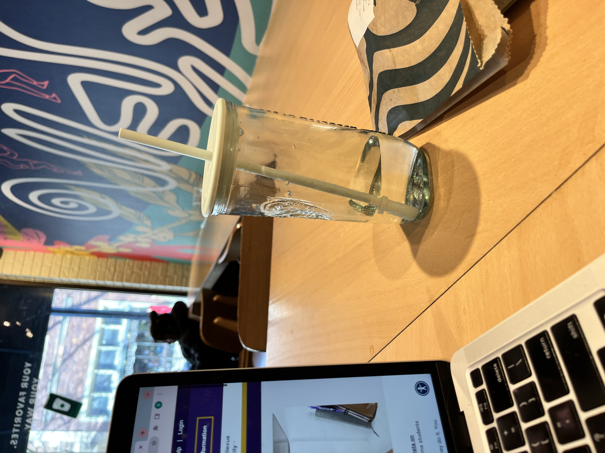
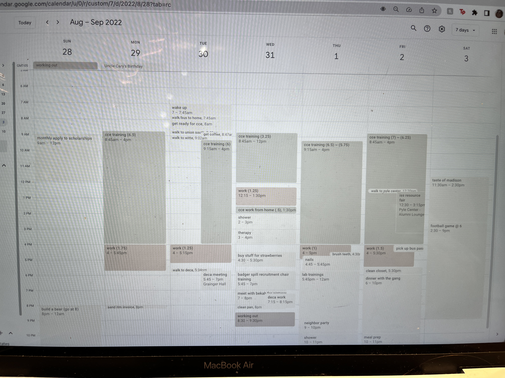

This section is about how to balance college with work.
College is expensive. Most students need to work a job or multiple jobs to help pay for tuition, rent, groceries, activities with friends, textbooks, etc. However, being a student and working a job can cause extreme stress. I have personally had many panic attacks and late nights due to this situation. Now I would like to share my tips with you to help balance the two.
Here are three tips that have helped me balance work and school.
Know Your Limits
Use Google Calendar
Communicate with Your Professors and Supervisors
Here is how to implement the above tips.:
Know Your Limits
A lesson that was difficult for me to learn throughout this process is the ability to say "No."" to your friends, classmates, supervisors, and professors. Sometimes I had to tell my friends I was not going to go to a party because I needed to study for a test, and sometiems I had to tell my boss I would not pick up an extra shift because I was too stressed about my next exam. Knowing your limits helps maintain your inner peace.
Use Google Calendar
Use a Google Calendar or something similar to keep track of when your shifts, exams, and projects are. I also like to block out time to study and time to relax. This tactic ensures I do not overbook myself or forget anything.
Communicate with Your Professors and Supervisors
If you need an extension on a project or to switch shift times, professors and supervisors are usually understanding with ample communication and effort. They are people and have probably been a college student too. Make sure to be polite and thorough in your communication, and ask for extensions days or even weeks before it is needed.
Here are some pictures of me using the tips above.

I like to do my homework at a cafe in between work and class to have a change of settings and to help with my inner peace.

Here is an example of a week on my Google Calendar.
This picture shows me and my friends at a conference for school. I communicated with my boss that I would be out of town for this so he could help me take time off.
For more tips on how to balance school and work, visit the website below.